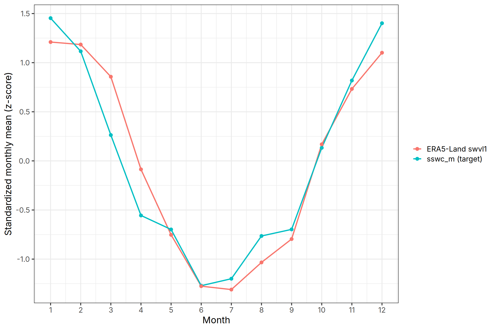
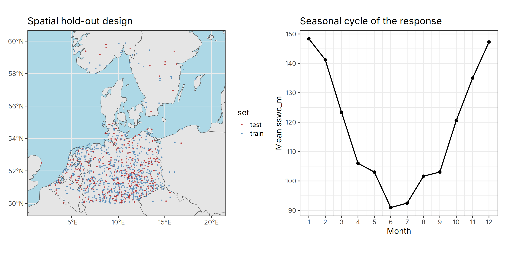
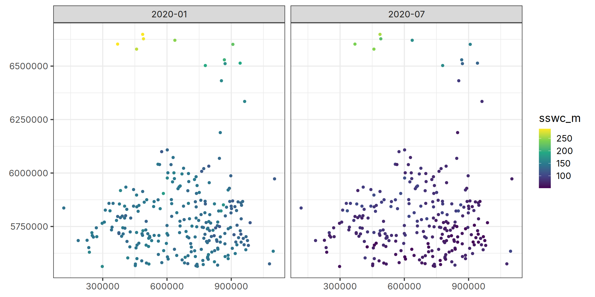

library("dplyr")
library("tidyr")
library("tidymodels")
library("terra")
library("sf")
library("ecmwfr")
library("ranger")
library("patchwork")
tidymodels_prefer()Modelling Monthly Soil Surface Water Content over MODIS Tile h18v03
R
spatial data science
remote sensing
GIS
r-spatial
machine learning
Modelling Monthly Soil Surface Water Content
Hello, and welcome to my first blog post in English!
I have already been writing a Turkish blog about R, ecology, and spatial data science, and for a while I have been thinking about starting an English version as well.
Finally, here we are. :)
This post is about a hackathon.
Tree weeks ago, we attended the OpenGeoHub Foundation Earth Observation Summer School 2026 at Istanbul Technical University in İstanbul. It was a wonderful experience once again — I also attended the summer school in Poznań in 2023.
As part of the summer school, we had to complete a hackathon project. I selected the topic Modelling Monthly Soil Surface Water Content over MODIS Tile h18v03 and, fortunately, managed to finish it.
My submission was not the top-ranked one, and I think there are some issues with the modelling approach. Still, I wanted to share it here, discuss what worked and what did not, and reflect on what I would improve next time. I have also made a few changes to the original notebook for this blog post.
I am still developing my experience with spatial machine-learning workflows, so I do not consider this analysis a definitive solution. There may be aspects of the modelling and validation strategy that could be improved. I would therefore be very interested in comments, alternative approaches, and suggestions from readers with more experience in this area.
Enjoy the read!
Introduction
Soil moisture in the uppermost soil layer mediates infiltration, evapotranspiration and runoff, and it responds quickly to rainfall and to the atmospheric demand for water. Mapping how it varies from month to month is valuable for a range of environmental applications, but direct measurements are sparse in space. A common strategy is to learn a statistical relationship between in-situ measurements and spatially exhaustive covariates — satellite imagery, and climate reanalysis — and then to apply that relationship where no measurements exist (Hengl et al. 2018).
The objective here is to predict monthly soil surface water content, denoted sswc_m, for a set of stations on MODIS tile h18v03. The model quality is judged by the root-mean-square error (\(RMSE\)) on the hidden test stations.
Data
Station observations
The training and test tables share the same structure. Each row is one station-month and carries the station coordinates (x, y), a set of MODIS-derived predictors, and a year-month label (YEARMON). The training table additionally contains the response sswc_m.
# Options
options(scipen=999)
ggplot2::theme_set(ggplot2::theme_bw(base_family="Inter", base_size=16))train <- read.csv("data/input/train.csv")
train <- train[!names(train) %in% c("X", "Unnamed..0")]
train <- `names<-`(train, tolower(names(train)))
test <- read.csv("data/input/test.csv")
test <- test[!names(test) %in% c("X", "row_id", "cluster")]
test <- `names<-`(test, tolower(names(test)))
prep_features <- function(df) {
df$year <- as.integer(substr(df$yearmon, 1, 4))
df$month <- as.integer(substr(df$yearmon, 6, 7))
df$month_sin <- sin(2 * pi * df$month / 12)
df$month_cos <- cos(2 * pi * df$month / 12)
df$loc_id <- paste(df$x, df$y, sep="_")
df
}
train <- prep_features(train)
test <- prep_features(test)str(train)'data.frame': 154594 obs. of 15 variables:
$ x : num 192611 192611 192611 192611 192611 ...
$ y : num 5685001 5685001 5685001 5685001 5685001 ...
$ dlst : num 2796 2762 2790 2853 2918 ...
$ dlst.95 : num 2822 2768 2797 2900 2943 ...
$ nlst : num 2744 2737 2745 2749 2799 ...
$ nlst.95 : num 2759 2772 2764 2786 2815 ...
$ geom : int -31 -51 -37 0 60 121 170 190 178 136 ...
$ evi : int 1594 1592 1554 1721 2435 2770 2777 2559 2268 2585 ...
$ sswc_m : num 133 123 122 104 121 ...
$ yearmon : chr "2005-12" "2006-01" "2006-02" "2006-03" ...
$ year : int 2005 2006 2006 2006 2006 2006 2006 2006 2006 2006 ...
$ month : int 12 1 2 3 4 5 6 7 8 9 ...
$ month_sin: num -0.000000000000000245 0.499999999999999944 0.866025403784438597 1 0.866025403784438708 ...
$ month_cos: num 1 0.8660254037844387076 0.500000000000000111 0.0000000000000000612 -0.499999999999999778 ...
$ loc_id : chr "192610.797746353_5685001.46987854" "192610.797746353_5685001.46987854" "192610.797746353_5685001.46987854" "192610.797746353_5685001.46987854" ...str(test)'data.frame': 73998 obs. of 14 variables:
$ x : num 118207 118207 118207 118207 118207 ...
$ y : num 5836536 5836536 5836536 5836536 5836536 ...
$ dlst : num 2797 2817 2881 2919 2954 ...
$ dlst.95 : num 2819 2819 2914 2949 2978 ...
$ nlst : num 2752 2766 2766 2782 2834 ...
$ nlst.95 : num 2754 2792 2793 2800 2853 ...
$ geom : int -62 -48 -9 51 113 162 183 171 128 68 ...
$ evi : int 2367 2382 2654 3119 3288 3359 3555 3493 3258 3087 ...
$ yearmon : chr "2001-01" "2001-02" "2001-03" "2001-04" ...
$ year : int 2001 2001 2001 2001 2001 2001 2001 2001 2001 2001 ...
$ month : int 1 2 3 4 5 6 7 8 9 10 ...
$ month_sin: num 0.5 0.866 1 0.866 0.5 ...
$ month_cos: num 0.8660254037844387076 0.500000000000000111 0.0000000000000000612 -0.499999999999999778 -0.8660254037844387076 ...
$ loc_id : chr "118206.773972219_5836535.61571117" "118206.773972219_5836535.61571117" "118206.773972219_5836535.61571117" "118206.773972219_5836535.61571117" ...ERA5-Land precipitation and soil moisture
ERA5-Land provides hourly and monthly land-surface fields at roughly 9 km resolution from 1950 onward (Muñoz-Sabater et al. 2021), derived from the ERA5 reanalysis (Hersbach et al. 2020). It covers the full 2001–2024 study period, which makes it a natural match for this problem. We retrieve two monthly variables over the tile’s bounding box: total precipitation and volumetric soil water in the top layer (swvl1 in \(\mathrm{m^3\,m^{-3}}\), which is closely related to the response variable and provides a physically meaningful predictor). Downloads use the ecmwfr interface to the Copernicus Climate Data Store (Hufkens et al. 2023).
era_path <- "data/input/era5land_monthly_2001_2024.nc"
dir.create(dirname(era_path), showWarnings=FALSE, recursive=TRUE)
if (!file.exists(era_path)) {
Sys.setenv(R_KEYRING_BACKEND="env")
options(keyring_backend="env")
rc <- readLines(path.expand("~/.cdsapirc"))
wf_set_key(key=substr(rc[2], 6, 41))
request <- list(
dataset_short_name="reanalysis-era5-land-monthly-means",
product_type="monthly_averaged_reanalysis",
variable=c("total_precipitation", "volumetric_soil_water_layer_1"),
year=as.character(2001:2024),
month=sprintf("%02d", 1:12),
time="00:00",
area=c(65, -10, 50, 25), # N, W, S, E
data_format="netcdf",
download_format="unarchived",
target=basename(era_path)
)
wf_request(request, transfer=TRUE, path=dirname(era_path), time_out=1800,
retry=30, verbose=TRUE)
}The reanalysis grid is sampled at every station. Because ERA5-Land is defined on land cells only, coastal stations fall on masked (water) cells and would otherwise return missing values for all months. We snap those stations to the nearest land cell before extracting, which removes the gaps without discarding stations. The previous month’s precipitation is then formed per station as a one-month lag; only the first month of each series (January 2001) is left undefined and is median-imputed later.
sinu <- "+proj=sinu +lon_0=0 +x_0=0 +y_0=0 +a=6371007.181 +b=6371007.181 +units=m +no_defs"
era5 <- rast(era_path)
# Unique stations across train and test, projected to the reanalysis CRS
locs <- bind_rows(
distinct(train, loc_id, x, y),
distinct(test, loc_id, x, y)
) |>
distinct(loc_id, x, y)
locs_v <- vect(locs, geom=c("x", "y"), crs=sinu) |> project("EPSG:4326")
ex <- terra::extract(era5, locs_v, ID=FALSE)
ex$loc_id <- locs$loc_id
# Snap water-cell stations to the nearest land cell (static land mask)
na_idx <- which(is.na(ex[["swvl1_1"]]))
if (length(na_idx) > 0) {
land_xy <- xyFromCell(era5, which(!is.na(values(era5[[1]], mat=FALSE))))
na_ll <- crds(locs_v[na_idx])
snap_xy <- t(vapply(seq_len(nrow(na_ll)), function(i) {
d <- (land_xy[, 1] - na_ll[i, 1])^2 + (land_xy[, 2] - na_ll[i, 2])^2 # euclidean distance
land_xy[which.min(d), ]
}, numeric(2)))
patch <- terra::extract(era5, snap_xy)
if ("ID" %in% names(patch)) patch$ID <- NULL
ex[na_idx, names(era5)] <- patch[, names(era5)]
}
# Reshape to (station, month) and build the one-month precipitation lag
months_seq <- format(seq(as.Date("2001-01-01"),
as.Date("2024-12-01"),
by="month"),
"%Y-%m")
era5_cov <- ex |>
pivot_longer(-loc_id, names_to="layer", values_to="value") |>
mutate(
var=sub("_[0-9]+$", "", layer),
idx=as.integer(sub("^.*_", "", layer)),
yearmon=months_seq[idx]
) |>
select(loc_id, yearmon, var, value) |>
pivot_wider(names_from=var, values_from=value) |>
rename(era5_precip=tp, era5_swvl1=swvl1) |>
arrange(loc_id, yearmon) |>
group_by(loc_id) |>
mutate(era5_precip_lag1=dplyr::lag(era5_precip)) |>
ungroup()
colSums(is.na(era5_cov)) loc_id yearmon era5_swvl1 era5_precip
0 0 0 0
era5_precip_lag1
915 Before modelling, it is worth checking whether the reanalysis data are temporally aligned with the response. Figure 1 compares the seasonal cycles of ERA5-Land top-layer soil water and the response variable. The two series show similar seasonal patterns, providing a useful sanity check for temporal alignment.
The two series are standardized to z-scores to facilitate comparison of their seasonal patterns despite their different scales.
train2 <- train |> left_join(era5_cov, by=c("loc_id", "yearmon"))
train2 |>
mutate(month=as.integer(substr(yearmon, 6, 7))) |>
group_by(month) |>
summarise(`sswc_m (target)`=mean(sswc_m, na.rm=TRUE),
`ERA5-Land swvl1`=mean(era5_swvl1, na.rm=TRUE),
.groups="drop") |>
mutate(across(-month, \(x) as.numeric(scale(x)))) |>
pivot_longer(-month, names_to="variable", values_to="z") |>
ggplot(aes(month, z, colour=variable)) +
geom_line(linewidth=1) +
geom_point() +
scale_x_continuous(breaks=1:12) +
labs(x="Month", y="Standardized monthly mean (z-score)", colour=NULL)
There are missing values in dlst, dlst.95, nlst, nlst.95, and era5_precip_lag1 variables. Missing values are median-imputed in the model.
Exploratory analysis
Two patterns stand out and motivate the modelling choices. The left panel of Figure 2 shows that the test stations are interspersed among the training stations rather than forming a separate block, so the relevant validation scenario is prediction at scattered new sites within the same region. The right panel shows the seasonal cycle of the response: soil water content is highest in winter and reaches a clear minimum in June–July, when evapotranspiration is greatest. This seasonal signal is strong and smooth, which is why an encoding of the month is included from the outset.
world <- maps::map("world", plot=FALSE, fill=TRUE) |>
st_as_sf() |>
st_geometry()
all_locs <- bind_rows(
train |> distinct(loc_id, x, y),
test |> distinct(loc_id, x, y)
) |>
distinct(loc_id, x, y)
loc_sf <- st_as_sf(all_locs, coords=c("x", "y"), crs=sinu)
aoi_sinu <- loc_sf |>
st_union() |>
st_convex_hull() |>
st_buffer(30000) |>
st_as_sf()
aoi_ext <- ext(vect(aoi_sinu))
bb <- vect(aoi_ext, crs=sinu) |> project("EPSG:4326") |> st_bbox()
dt_sf <- bind_rows(
mutate(train[c("x", "y")], set="train"),
mutate(test[c("x", "y")], set="test")
) |>
st_as_sf(coords=c("x", "y"), crs=sinu)
dt_sf <- dt_sf[!duplicated(dt_sf$geometry), ]
p_space <- ggplot() +
geom_sf(data=world) +
geom_sf(data=dt_sf, aes(colour=set), size=0.7, alpha=0.7) +
scale_colour_manual(values=c(train="steelblue", test="firebrick")) +
coord_sf(xlim=bb[c(1, 3)], ylim=bb[c(2, 4)]) +
labs(title="Spatial hold-out design", x=NULL, y=NULL) +
theme(panel.background=element_rect(fill="lightblue"),
legend.background=element_rect(fill="white", colour=NA),
legend.key=element_rect(fill="white", colour=NA))
p_season <- train |>
group_by(month) |>
summarise(mean_sswc=mean(sswc_m), .groups="drop") |>
ggplot(aes(month, mean_sswc)) +
geom_line(linewidth=1) +
geom_point() +
scale_x_continuous(breaks=1:12) +
labs(title="Seasonal cycle of the response", x="Month", y="Mean sswc_m")
p_space + p_season
Cross-validation design
Because the test stations are new locations, a random split of the station-month rows would place records from the same station in both the training and the assessment folds. The strong within-station similarity would then leak into validation and produce an optimistic error estimate that does not reflect performance at genuinely new sites (Roberts et al. 2017; Meyer et al. 2018). We therefore use location-blocked cross-validation: whole stations are assigned to folds, so that no station contributes rows to both sides of a split. This mirrors the competition’s own train/test design.
The same folds and the same metric set are reused for every model so that comparisons are fair. \(RMSE\) is the competition metric and our primary criterion; we also report the coefficient of determination (\(R^2\)) and the mean absolute error (\(MAE\)).
set.seed(123)
folds <- group_vfold_cv(train2, group=loc_id, v=10)
metrics <- metric_set(rmse, rsq, mae)Models
Random forest
The first substantive model is a random forest, which handles nonlinear responses and predictor interactions with little tuning and is a strong default for tabular environmental data (Breiman 2001; Hengl et al. 2018). We use the ranger engine (Wright and Ziegler 2017) with 500 trees. Missing values are median-imputed inside the recipe.
The full set of predictors used in the model is:
Location and time
x,y: station coordinates (in the sinusoidal MODIS grid CRS)year,month: calendar year and monthmonth_sin,month_cos: cyclical (sine/cosine) encoding of month, used so the model can learn a smooth seasonal cycle without treating December and January as far apart
MODIS-derived covariates (see the MODIS LST tutorial for details)
dlst: day-time mean monthly land surface temperature (LST)nlst: night-time mean monthly LSTdlst.95: upper 95th percentile of monthly day-time temperaturesnlst.95: upper 95th percentile of monthly night-time temperaturesgeom: geometric temperature monthlyevi: Enhanced Vegetation Index, based on the MODIS monthly product
ERA5-Land covariates (added independently, see the ERA5-Land section above)
era5_swvl1: monthly volumetric soil water in the top layerera5_precip: mean daily precipitation for the monthera5_precip_lag1: one-month lag of the monthly mean daily precipitation
rec <- recipe(sswc_m ~ x + y + dlst + dlst.95 + nlst + nlst.95 + geom + evi +
year + month + month_sin + month_cos + era5_swvl1 +
era5_precip + era5_precip_lag1,
data=train2) |>
step_impute_median(dlst, dlst.95, nlst, nlst.95, era5_precip_lag1)
rf_spec <- rand_forest(trees=500) |>
set_engine("ranger", num.threads=7, seed=123) |>
set_mode("regression")
wf_rf <- workflow() |> add_recipe(rec) |> add_model(rf_spec)
res_rf <- fit_resamples(wf_rf, resamples=folds, metrics=metrics)
collect_metrics(res_rf)# A tibble: 3 × 6
.metric .estimator mean n std_err .config
<chr> <chr> <dbl> <int> <dbl> <chr>
1 mae standard 26.2 10 0.671 pre0_mod0_post0
2 rmse standard 34.8 10 1.58 pre0_mod0_post0
3 rsq standard 0.482 10 0.0155 pre0_mod0_post0The random forest achieves a location-blocked cross-validated \(RMSE\) of approximately 34.8 and an \(R^2\) of approximately 0.48 at held-out locations. This is a reasonable starting point, but the modest \(R^2\) signals that much of the station-to-station variability is not captured by the provided predictors.
Results and Discussion
set.seed(123)
final_fit <- fit(wf_rf, data=train2)test2 <- test |>
mutate(.row_order=row_number()) |>
left_join(era5_cov, by=c("loc_id", "yearmon")) |>
arrange(.row_order)pred_test <- predict(final_fit, new_data=test2)
test2$pred <- pred_test$.predsubmission <- read.csv("data/input/sample_submission.csv")
stopifnot(nrow(submission) == nrow(test2))
submission$sswc_m <- test2$preddir.create("data/output", showWarnings=FALSE, recursive=TRUE)
write.csv(submission, "data/output/submission_rf.csv", row.names=FALSE,
quote=FALSE)The final model is the random forest with the MODIS, and ERA5-Land predictors. It is refitted on the entire training set and applied to the test stations. The submission is written by copying the sample submission and replacing its response column, which guarantees that the row order and identifiers match the grader exactly.
Because the MODIS predictors are only available at the station points, the predictions are shown as station maps rather than a continuous surface; producing a gridded map would require the MODIS temperature and vegetation layers for the whole tile. Figure 3 contrasts a winter and a summer month at the test stations and reproduces the expected seasonal pattern, with markedly wetter soils in January than in July.
test2 |>
filter(yearmon %in% c("2020-01", "2020-07")) |>
ggplot(aes(x, y, colour=pred)) +
geom_point(size=1.2) +
scale_colour_viridis_c(name="sswc_m") +
facet_wrap(~yearmon) +
coord_equal() +
labs(x=NULL, y=NULL)
This prediction task is actually quite challenging because the data have both spatial and temporal structure, and the validation strategy should account for potential spatial and temporal autocorrelation. By blocking folds by station identity, we partially avoid the overly optimistic scores that a naive random split could produce. This also makes the validation setup more similar to the hidden test set, where predictions are required for unseen stations.
However, station-based blocking does not necessarily guarantee spatial independence between folds. Multiple stations may still fall within the same or neighbouring grid cells, especially given the relatively coarse resolution of some predictors. A more rigorous approach could therefore involve spatial thinning and spatial cross-validation methods such as block cross-validation or kNNDM cross-validation (Linnenbrink et al. 2024).
In addition, including spatial coordinates improved predictive performance, suggesting that geographic location contains information that is not fully captured by the MODIS and ERA5-Land covariates. However, the coarse spatial resolution of ERA5-Land may limit its ability to represent fine-scale differences among locations.
Also, using spatial coordinates directly as covariates may not be an ideal modelling strategy. A better approach could be to account for spatial dependence more explicitly using methods such as RFsp, RFSI, RandomForestsGLS or spatialRF (Hengl et al. 2018; Sekulić et al. 2020; Nowosad 2025).
The most promising next steps would be to include covariates that vary at the station scale and plausibly influence water retention, such as soil texture and organic carbon from products like SoilGrids, land-cover classes, and higher-resolution satellite soil-moisture products where temporal coverage allows.
On the modelling side, gradient-boosted trees may outperform random forests, while more systematic feature engineering could also help improve predictive performance.
Reproducibility
Note on the use of AI tools: I used large language models as supporting tools during the preparation of this post, mainly for language editing, code style and debugging suggestions, and occasional methodological feedback. The analysis workflow, modelling decisions, and the majority of the code were developed by me. I reviewed, revised, and reran the complete notebook multiple times, and I take full responsibility for the final content, code, interpretations, and any remaining errors.
Code
sessionInfo()R version 4.6.1 (2026-06-24)
Platform: x86_64-pc-linux-gnu
Running under: Ubuntu 26.04.1 LTS
Matrix products: default
BLAS: /usr/lib/x86_64-linux-gnu/openblas-pthread/libblas.so.3
LAPACK: /usr/lib/x86_64-linux-gnu/openblas-pthread/libopenblasp-r0.3.32.so; LAPACK version 3.12.0
locale:
[1] LC_CTYPE=en_US.UTF-8 LC_NUMERIC=C
[3] LC_TIME=tr_TR.UTF-8 LC_COLLATE=en_US.UTF-8
[5] LC_MONETARY=tr_TR.UTF-8 LC_MESSAGES=en_US.UTF-8
[7] LC_PAPER=tr_TR.UTF-8 LC_NAME=C
[9] LC_ADDRESS=C LC_TELEPHONE=C
[11] LC_MEASUREMENT=tr_TR.UTF-8 LC_IDENTIFICATION=C
time zone: Europe/Istanbul
tzcode source: system (glibc)
attached base packages:
[1] stats graphics grDevices utils datasets methods base
other attached packages:
[1] patchwork_1.3.2 ranger_0.18.0 ecmwfr_2.0.3 sf_1.1-2
[5] terra_1.9-46 yardstick_1.4.0 workflowsets_1.1.1 workflows_1.3.0
[9] tune_2.1.0 tailor_0.1.0 rsample_1.3.2 recipes_1.4.0
[13] purrr_1.2.2 parsnip_1.6.0 modeldata_1.6.0 infer_1.1.0
[17] ggplot2_4.0.3 dials_1.4.4 scales_1.4.0 broom_1.0.13
[21] tidymodels_1.5.0 tidyr_1.3.2 dplyr_1.2.1
loaded via a namespace (and not attached):
[1] DBI_1.3.0 conflicted_1.2.0 rlang_1.3.0
[4] magrittr_2.0.5 furrr_0.4.0 otel_0.2.0
[7] e1071_1.7-17 compiler_4.6.1 vctrs_0.7.3
[10] maps_3.4.3 pkgconfig_2.0.3 fastmap_1.2.0
[13] backports_1.5.1 labeling_0.4.3 utf8_1.2.6
[16] rmarkdown_2.32 prodlim_2026.03.11 xfun_0.60
[19] cachem_1.1.0 jsonlite_2.0.0 parallel_4.6.1
[22] R6_2.6.1 RColorBrewer_1.1-3 parallelly_1.48.0
[25] rpart_4.1.27 lubridate_1.9.5 Rcpp_1.1.2
[28] knitr_1.51 future.apply_1.20.2 Matrix_1.7-6
[31] splines_4.6.1 nnet_7.3-21 timechange_0.4.0
[34] tidyselect_1.2.1 rstudioapi_0.19.0 dichromat_2.0-0.1
[37] yaml_2.3.12 timeDate_4052.112 codetools_0.2-20
[40] curl_8.0.0 listenv_1.0.0 lattice_0.23-1
[43] tibble_3.3.1 withr_3.0.3 S7_0.2.2
[46] evaluate_1.0.5 future_1.75.0 survival_3.8-11
[49] units_1.0-1 proxy_0.4-29 pillar_1.11.1
[52] KernSmooth_2.23-27 generics_0.1.4 mirai_2.7.2
[55] globals_0.19.1 class_7.3-24 glue_1.8.1
[58] tools_4.6.1 data.table_1.18.6.1 gower_1.0.2
[61] reactable_0.4.5 grid_4.6.1 ipred_0.9-16
[64] cli_3.6.6 DiceDesign_1.10 viridisLite_0.4.3
[67] lava_1.9.3 keyring_1.4.1 gtable_0.3.6
[70] digest_0.6.39 classInt_0.4-11 nanonext_1.10.2
[73] htmlwidgets_1.6.4 farver_2.1.2 memoise_2.0.1
[76] htmltools_0.5.9 lifecycle_1.0.5 hardhat_1.4.3
[79] httr_1.4.9 sparsevctrs_0.3.6 MASS_7.3-66 References
Breiman, Leo. 2001. “Random Forests.” Machine Learning 45 (1): 5–32. https://doi.org/10.1023/A:1010933404324.
Hengl, Tomislav, Madlene Nussbaum, Marvin N. Wright, Gerard B. M. Heuvelink, and Benedikt Gräler. 2018. “Random Forest as a Generic Framework for Predictive Modeling of Spatial and Spatio-Temporal Variables.” PeerJ 6: e5518. https://doi.org/10.7717/peerj.5518.
Hersbach, Hans, Bill Bell, Paul Berrisford, et al. 2020. “The ERA5 Global Reanalysis.” Quarterly Journal of the Royal Meteorological Society 146 (730): 1999–2049. https://doi.org/10.1002/qj.3803.
Hufkens, Koen, Reto Stauffer, and Elio Campitelli. 2023. Ecmwfr: Interface to ’ECMWF’ and ’CDS’ Data Web Services.
Linnenbrink, J., C. Milà, M. Ludwig, and H. Meyer. 2024. “kNNDM CV: \(k\)-Fold Nearest-Neighbour Distance Matching Cross-Validation for Map Accuracy Estimation.” Geoscientific Model Development 17 (15): 5897–912. https://doi.org/10.5194/gmd-17-5897-2024.
Meyer, Hanna, Christoph Reudenbach, Tomislav Hengl, Marwan Katurji, and Thomas Nauss. 2018. “Improving Performance of Spatio-Temporal Machine Learning Models Using Forward Feature Selection and Target-Oriented Validation.” Environmental Modelling & Software 101: 1–9. https://doi.org/10.1016/j.envsoft.2017.12.001.
Muñoz-Sabater, Joaquín, Emanuel Dutra, Anna Agustí-Panareda, et al. 2021. “ERA5-Land: A State-of-the-Art Global Reanalysis Dataset for Land Applications.” Earth System Science Data 13 (9): 4349–83. https://doi.org/10.5194/essd-13-4349-2021.
Nowosad, Jakub. 2025. “Specialized R Packages for Spatial Machine Learning: An Introduction to RandomForestsGLS, spatialRF, and Meteo.” June 25. https://geocompx.org/post/2025/sml-bp5/.
Roberts, David R., Volker Bahn, Simone Ciuti, et al. 2017. “Cross-Validation Strategies for Data with Temporal, Spatial, Hierarchical, or Phylogenetic Structure.” Ecography 40 (8): 913–29. https://doi.org/10.1111/ecog.02881.
Sekulić, Aleksandar, Milan Kilibarda, Gerard B. M. Heuvelink, Mladen Nikolić, and Branislav Bajat. 2020. “Random Forest Spatial Interpolation.” Remote Sensing 12 (10). https://doi.org/10.3390/rs12101687.
Wright, Marvin N., and Andreas Ziegler. 2017. “ranger: A Fast Implementation of Random Forests for High Dimensional Data in C++ and R.” Journal of Statistical Software 77 (1): 1–17. https://doi.org/10.18637/jss.v077.i01.